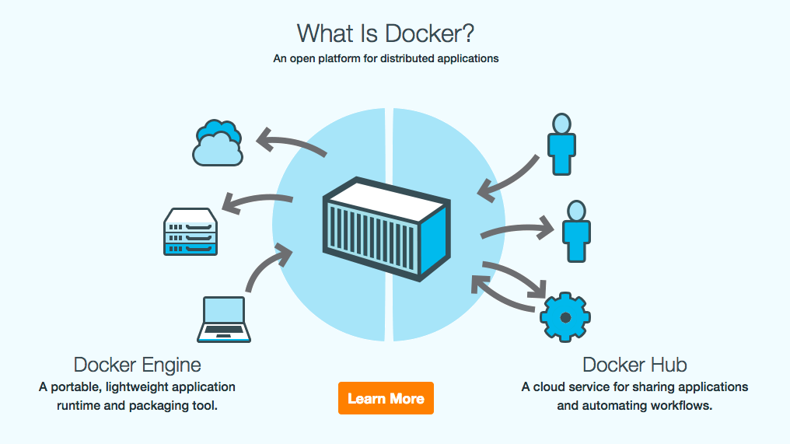

Summary :
- 1. Containers vs VMs
- 2. What Is Docker ?
- 3. The Docker Ecosystem
- 4. Getting Started
- 5. Customizing Containers
- 6. Using Multiple Containers
- 7. Real Example
- 8. Useful Commands
- 9. Links
Containers vs VMs :

What Is Docker ?

The Docker Ecosystem :
- Docker Engine (Create Docker images and run Docker containers)
- Docker Compose (Defines applications built using multiple containers.)
- Docker Hub (A hosted registry service for managing and building images.)
- Docker Cloud (A hosted service for building, testing, and deploying Docker images to your hosts.)
- Docker Machine (Automate container provisioning on your network or in the cloud. Available for Windows, Mac OS X, or Linux.)
- Docker Swarm (Clustering)
Getting Started :
Hello world :
docker run docker/whalesay cowsay hello world!
Nginx server :
docker run -d -p 80:80 --name webserver nginx
Customizing Containers :
Dockerfile :
FROM php:7-fpm
MAINTAINER Daniel Lucas
RUN docker-php-ext-install pdo_mysql mbstring;
Using Multiple Containers :
docker-compose.yml
source:
image: sameersbn/mysql
volumes:
- ./:/var/www/html
web:
image: howlowck/nginx-simple
ports:
- "80:80"
volumes_from:
- source
volumes:
- ./.docker/web/vhost-acid.conf:/etc/nginx/sites-enabled/biddle.docker
links:
- php
environment:
- VIRTUAL_HOST=biddle.docker
php:
build: ./.docker/php-fpm
volumes_from:
- source
volumes:
- ./.docker/php-fpm/php.ini:/usr/local/etc/php/php.ini
- ./.docker/php-fpm/entrypoint.sh:/sbin/php-fpm/entrypoint.sh
links:
- db
entrypoint: ["bash","/sbin/php-fpm/entrypoint.sh"]
Real Example :
Laradock :
https://github.com/LaraDock/laradock
git clone https://github.com/LaraDock/laradock.git
docker-compose up -d nginx mysql
Useful Commands :
docker ps -a
docker exec -it {container_name} bash
docker-compose ps
docker-compose exec --user=laradock workspace bash
docker-compose stop {container_name:optional}
docker-compose down {container_name:optional}
docker rm -f {container}
docker images
docker rmi {image}